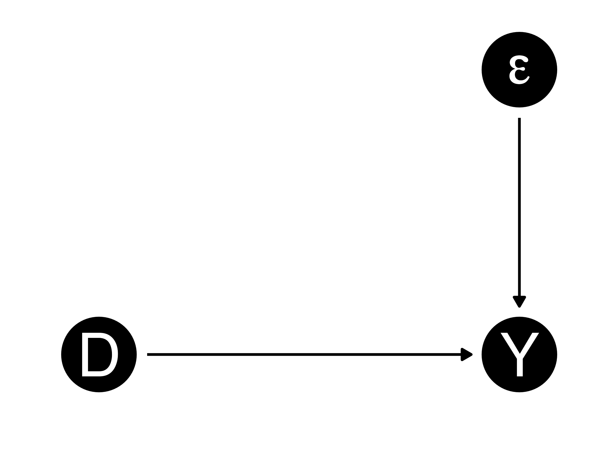
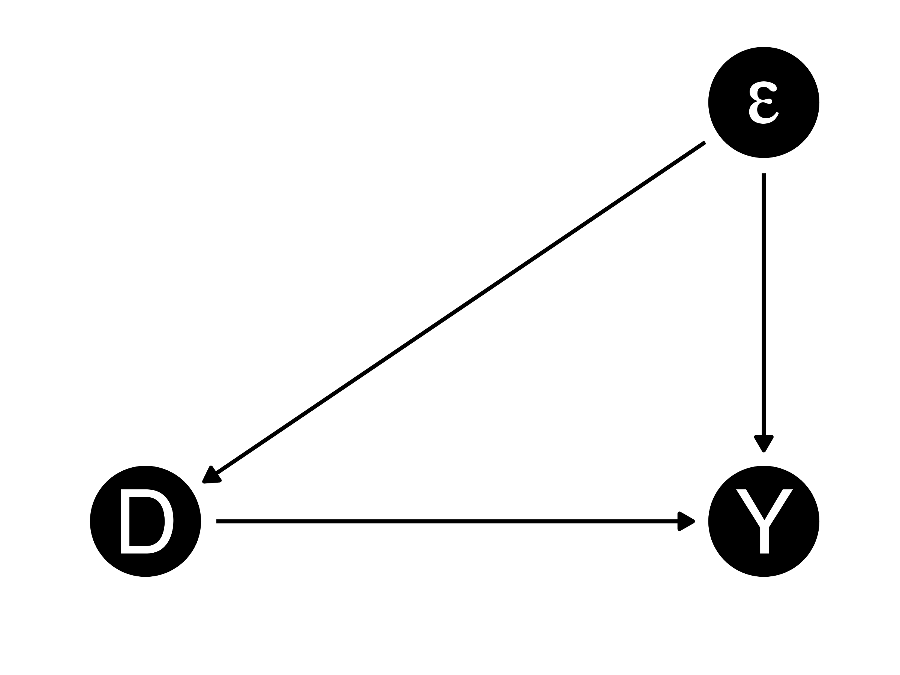
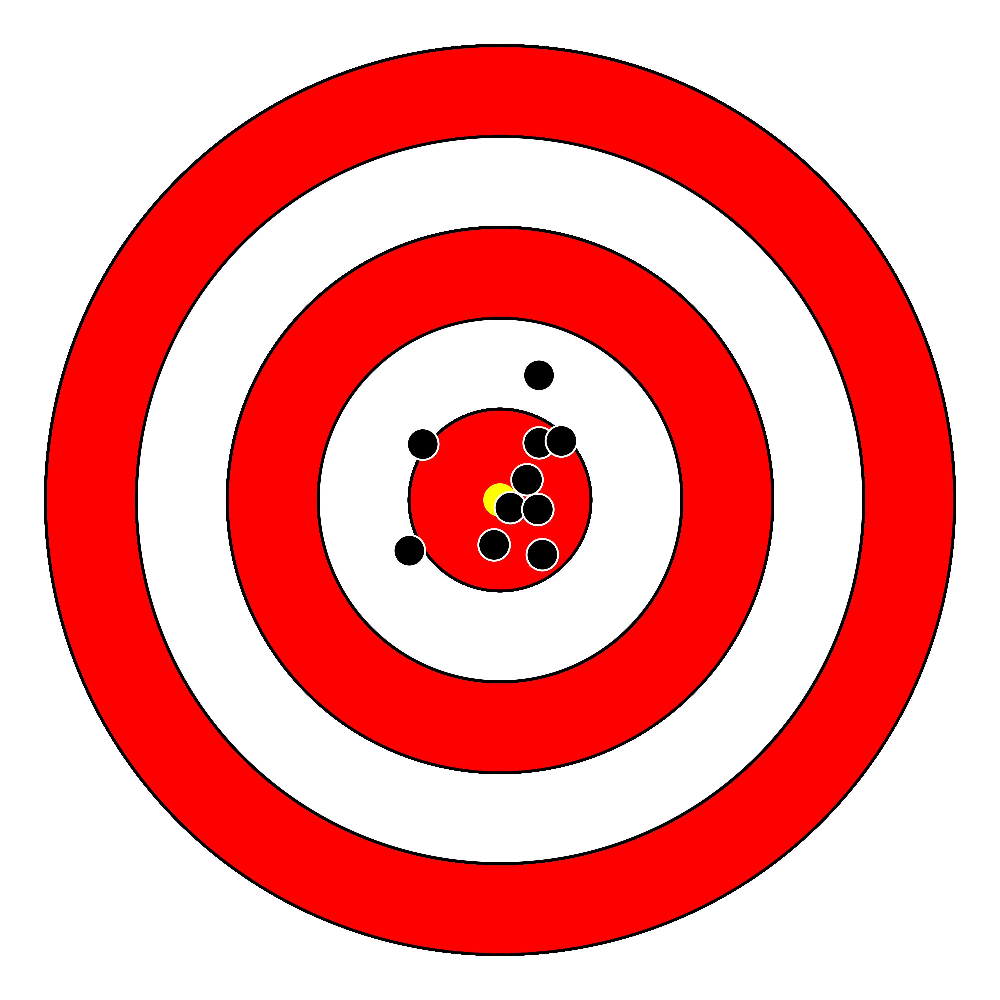
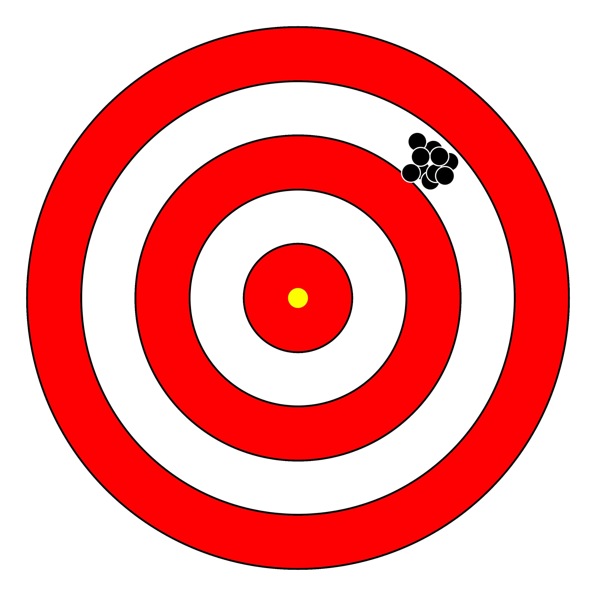
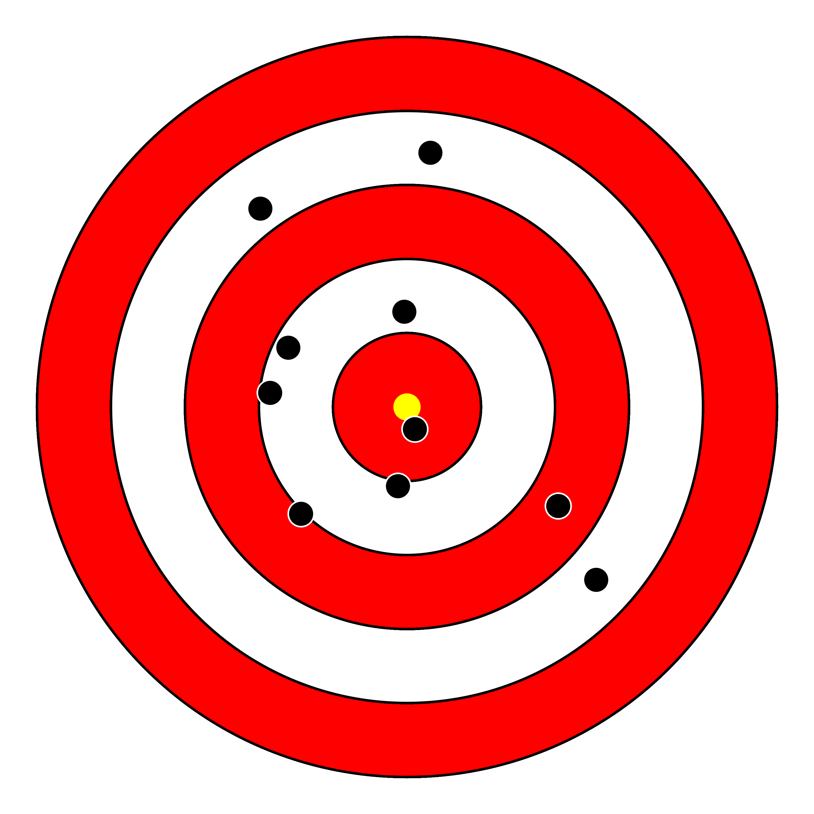
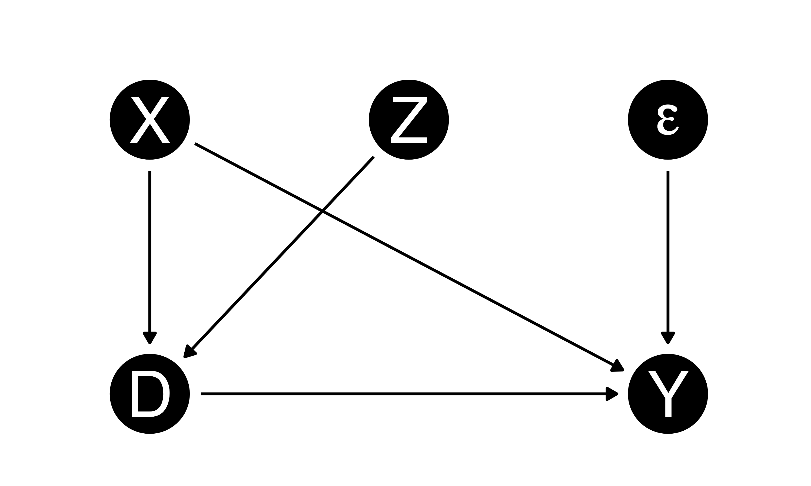
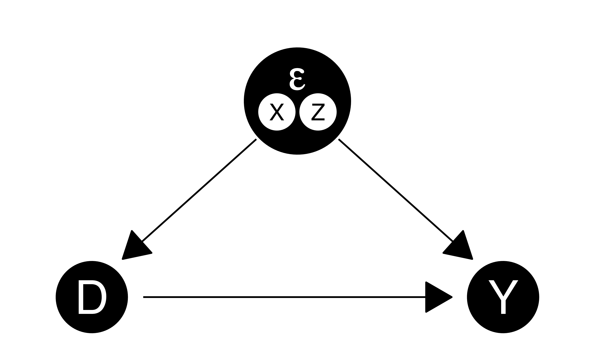

3/ 内生性
割当メカニズム（assignment mechanism）：個体\(i\)が処置を受けるメカニズム
内生性（endogeneity）：処置変数と誤差項間に相関が存在する状態（\(\Leftrightarrow\)外生性）


例）2024年衆院選の投票率：53.8%（真の値; パラメーター）
| 調査 | \(n\) | 投票率 | 誤差 |
|---|---|---|---|
| 調査A | 100 | 0.490 | 0.048 |
| 調査B | 500 | 0.568 | 0.030 |
| 調査C | 1,000 | 0.561 | 0.023 |
| 調査D | 2,000 | 0.543 | 0.005 |
バイアス（偏り; bias）：統計量の期待値とパラメーター間のずれ
| 調査 | \(n\) | 投票率 | 誤差 |
|---|---|---|---|
| 調査A | 3,000 | 0.518 | -0.020 |
| 調査B | 1,000 | 0.514 | -0.024 |
| 調査C | 1,500 | 0.599 | 0.061 |
| 調査D | 2,000 | 0.547 | 0.009 |
| … | … | … | … |
| 調査\(\infty\) | 2,400 | 0.567 | 0.029 |
| 平均 | 0.000 |
| 調査 | \(n\) | 投票率 | 誤差 |
|---|---|---|---|
| 調査A | 3,000 | 0.635 | 0.097 |
| 調査B | 1,000 | 0.530 | -0.008 |
| 調査C | 1,500 | 0.594 | 0.056 |
| 調査D | 2,000 | 0.603 | 0.065 |
| … | … | … | … |
| 調査\(\infty\) | 2,400 | 0.585 | 0.047 |
| 平均 | 0.050 |





処置変数と誤差項間の相関関係（内生性）は様々な理由から発生する
社会科学における因果推論上に存在する内生性はセレクション・バイアスが原因1であるケースが多い
もともと優秀な人が宋さんの授業を取る（自己選択）
\[ \begin{align} & \mathbb{E}[Y_i | D_i = 1] - \mathbb{E}[Y_i | D_i = 0] \\ = & \mathbb{E}[Y_i(1) | D_i = 1] - \mathbb{E}[Y_i(0) | D_i = 0] \\ = & \mathbb{E}[Y_i(1) | D_i = 1] \textcolor{red}{- \mathbb{E}[Y_i(0) | D_i = 1] + \mathbb{E}[Y_i(0) | D_i = 1]} - \mathbb{E}[Y_i(0) | D_i = 0] \\ = & \underbrace{\mathbb{E}[Y_i(1) - Y_i(0) | D_i = 1]}_{\textsf{ATT}} + \underbrace{\mathbb{E}[Y_i(0) | D_i = 1] - \mathbb{E}[Y_i(0) | D_i = 0]}_{\textsf{selection bias}} \end{align} \]
授業の効果が高そうな人が宋さんの授業を取る（最適化選択）
\[ \begin{align} & \mathbb{E}[Y_i | D_i = 1] - \mathbb{E}[Y_i | D_i = 0] \\ = & \mathbb{E}[Y_i(1) | D_i = 1] - \mathbb{E}[Y_i(0) | D_i = 0] \\ = & \mathbb{E}[Y_i(1) | D_i = 1] \textcolor{red}{- \mathbb{E}[Y_i(1) | D_i = 0] + \mathbb{E}[Y_i(1) | D_i = 0]} - \mathbb{E}[Y_i(0) | D_i = 0] \\ = & \underbrace{\mathbb{E}[Y_i(1) | D_i = 1] - \mathbb{E}[Y_i(1) | D_i = 0]}_{\textsf{selection bias}} + \underbrace{\mathbb{E}[Y_i(1) - Y_i(0) | D_i = 0]}_{\textsf{ATC}} \end{align} \]
以下の2つの条件がすべて満たされる場合、ATEが推定可能
手元のサンプルが「授業効果が高そうな学生（\(i \in \{1, 2, 4, 7, 8\}\)）」だけなら…?
| \(i\) | \(Y_i(0)\) | \(Y_i(1)\) | ITE |
|---|---|---|---|
| 1 | 500 | 550 | 50 |
| 2 | 200 | 300 | 100 |
| 3 | 800 | 750 | -50 |
| 4 | 300 | 400 | 100 |
| 5 | 300 | 200 | -100 |
| 6 | 550 | 450 | -100 |
| 7 | 700 | 750 | 50 |
| 8 | 400 | 600 | 200 |
| 9 | 500 | 300 | -200 |
| 10 | 600 | 550 | -50 |
| 平均 | 0 |
内生性